第一节 · 楔子
孙悟空护送唐僧西天取经，历经八十一难。一路上，妖怪各有神通：有的呼风唤雨，有的腾云驾雾，有的变化多端。要克敌制胜，既要摸清它们的本领，也要找准它们的弱点，才能选对招式。
这一回，形形色色的函数，就是我们取经路上的妖怪。 它们有的平缓，有的陡峭；有的一路上升，有的起伏不定。只记住几个熟悉的函数，还不足以应对沿途的变化。
我们的目标，是学习研究函数性质的方法：看清它们怎样变化，判断它们何时增大、何时减小，寻找它们能够取到的最大值和最小值。摸清这些性质，才能在遇见新的函数时，有章法地分析，有根据地求解。
第二节 · 连续函数
直观上说，连续函数就是能一笔画出来的函数。本课程研究的函数，在所考察的区间内，基本上都是连续函数。
若 \displaystyle\lim_{x\to x_0}f(x)=f(x_0)，就称函数 \displaystyle f 在 \displaystyle x_0 处连续。若函数在某个区间的每一点都连续，就称它在这个区间上连续。
函数在某点处连续，要求：该点有函数值，附近的函数值有极限，而且极限恰好等于该点的函数值。
多项式、正弦函数、指数函数等常见初等函数，在各自的定义域内连续。
讨论函数 \displaystyle f(x) = |x| 的连续性。
比较各点处的极限与函数值。
任意 \displaystyle x_0\in\mathbb R 处都有 \displaystyle\lim_{x\to x_0}|x|=|x_0|=f(x_0)。特别地，\displaystyle\lim_{x\to0}|x|=0=f(0)。所以 \displaystyle f(x)=|x| 在整个实数轴上连续。
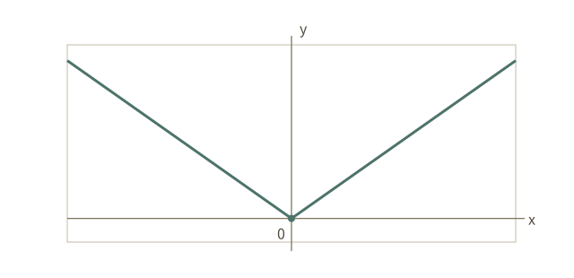
下面看几个非连续函数的例子。
讨论函数 \displaystyle f(x)=\frac1{|x|} 的连续性。
分析 \displaystyle f(x) 的定义域，找出使 \displaystyle f(x) 无定义的点，再检验该点处的极限行为。
当 \displaystyle x_0\ne0 时，\displaystyle\lim_{x\to x_0}\frac1{|x|}=\frac1{|x_0|}=f(x_0)，所以函数连续。
在 \displaystyle x=0 处，函数没有定义，且 \displaystyle\lim_{x\to0}\frac1{|x|}=+\infty，没有有限的极限。因此它在 \displaystyle0 处不连续，补充一个有限的函数值也不能使它连续。
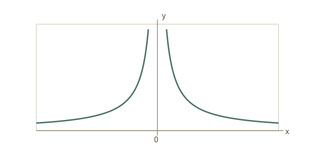
讨论函数 \displaystyle f(x)=\sin\frac1x 在 \displaystyle x=0 处的连续性，并说明能否通过补充定义使其连续。
考察 \displaystyle x \to 0 时 \displaystyle \sin\dfrac{1}{x} 的极限行为：取特殊数列 \displaystyle x_n \to 0 使得 \displaystyle \sin\dfrac{1}{x_n} 取不同值，说明极限不存在。
\displaystyle f(x)=\sin\frac1x 在 \displaystyle x=0 处没有定义，因此在该处不连续。
当 \displaystyle x 越来越接近 \displaystyle 0 时，\displaystyle \sin\dfrac{1}{x} 的图像振荡得越来越密。下面用两组趋于 \displaystyle 0 的取值，说明函数值没有共同的极限。
例如，取 \displaystyle x_n = \dfrac{1}{n\pi}，则 \displaystyle \sin\dfrac{1}{x_n} = \sin(n\pi) = 0；取 \displaystyle x_n = \dfrac{2}{(4n+1)\pi}，则 \displaystyle \sin\dfrac{1}{x_n} = 1。
因此，\displaystyle x\to0 时函数没有极限，补充零点处的函数值也不能使它连续。
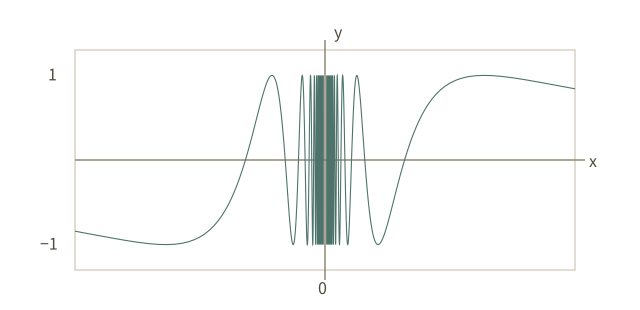
讨论函数 \displaystyle g(x)=\frac{\sin x}{x} 在 \displaystyle x=0 处的极限与连续性。
把 \displaystyle g 在零点的函数值补为 \displaystyle1，得到函数 \displaystyle G(x)=\begin{cases}\frac{\sin x}{x},&x\ne0,\\1,&x=0.\end{cases} 判断补齐后的函数 \displaystyle G 在 \displaystyle0 处是否连续。
先求 \displaystyle g 在零点处的极限，再与补齐后的函数值 \displaystyle G(0) 比较。
由上一回的重要极限，\displaystyle\lim_{x\to0}\frac{\sin x}{x}=1。原函数在零点没有定义，所以在那里不连续。
补充零点的函数值后，\displaystyle\lim_{x\to0}G(x)=1=G(0)，因此 \displaystyle G 在零点连续。在其他点，它也连续，所以补齐后的函数在整个实数轴上连续。
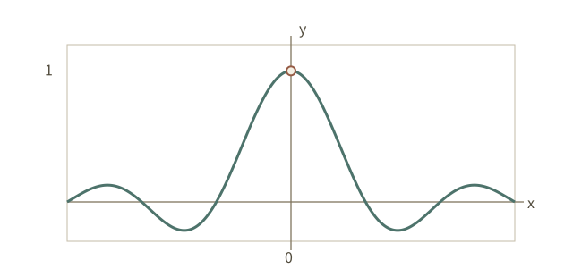
第三节 · 闭区间上的连续函数
设 \displaystyle f 在区间 \displaystyle I 上有定义。如果存在 \displaystyle x_{\max}\in I，使所有 \displaystyle x\in I 都满足
f(x)\le f(x_{\max}),
那么 \displaystyle f(x_{\max}) 就是最大值。同样，如果存在 \displaystyle x_{\min}\in I，使所有 \displaystyle x\in I 都满足
f(x)\ge f(x_{\min}),
那么 \displaystyle f(x_{\min}) 就是最小值。最大值和最小值统称最值；取得最值的位置可以不止一个。
若 \displaystyle a<b，且 \displaystyle f 在闭区间 \displaystyle[a,b] 上连续，那么它一定有界，并且一定能在这个区间内取到最大值和最小值。
定理保证最值存在，却没有直接告诉我们取到最值的位置。条件也要看全：例如 \displaystyle f(x)=x 在开区间 \displaystyle(0,1) 上连续，但取不到最大值和最小值。
函数 \displaystyle f(x) = \dfrac{1}{x} 是否在闭区间 \displaystyle [-1, 1] 上连续？
检验 \displaystyle f(x) 在 \displaystyle [-1,1] 上的定义域，找出不连续的点，再讨论极值定理的适用条件。
\displaystyle f(x) = \dfrac{1}{x} 在 \displaystyle x=0 处无定义，因此 \displaystyle f(x) 在闭区间 \displaystyle [-1,1] 上不连续（甚至无法在全区间上取值）。
由于 \displaystyle f(x) 不满足维尔斯特拉斯极值定理的条件（函数须在闭区间上处处连续），定理不适用。
实际上，当 \displaystyle x \to 0 时，\displaystyle |f(x)| = \dfrac{1}{|x|} \to +\infty，函数在 \displaystyle [-1,1] 上无界，既无最大值也无最小值，这正是定理不成立的反例。
若 \displaystyle f 在 \displaystyle[a,b] 上连续，\displaystyle A 是 \displaystyle f(a) 与 \displaystyle f(b) 之间的一个数，就存在 \displaystyle c\in[a,b]，使 \displaystyle f(c)=A。特别地，若两端函数值异号，则区间内部至少有一个零点。
符号函数 \displaystyle \mathrm{sgn}(x) = \begin{cases} 1, & x>0, \\ 0, & x=0, \\ -1, & x<0 \end{cases} 是否在闭区间 \displaystyle [-1, 1] 上连续？
检验 \displaystyle \mathrm{sgn}(x) 在 \displaystyle x=0 处的左右极限是否相等。
\displaystyle \mathrm{sgn}(x) 在 \displaystyle x=0 处不连续：
\lim_{x \to 0^-} \mathrm{sgn}(x) = -1, \qquad \lim_{x \to 0^+} \mathrm{sgn}(x) = 1.
从零点两侧趋近时得到不同的数，所以极限不存在，函数在 \displaystyle x=0 处不连续。
介值定理在这里不适用。例如，虽然 \displaystyle\frac12 介于端点函数值 \displaystyle-1 与 \displaystyle1 之间，但这个函数只取 \displaystyle-1,0,1 三个值，取不到 \displaystyle\frac12。这说明介值定理中的连续性条件不能省略。
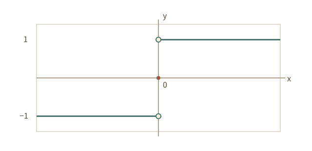
方程 \displaystyle x^3 - 4x^2 + 1 = 0 在区间 \displaystyle (0, 1) 内至少有一个根。
构造函数 \displaystyle f(x) = x^3 - 4x^2 + 1，计算其在区间端点的值，利用介值定理（布尔查诺定理）得出结论。
令 \displaystyle f(x) = x^3 - 4x^2 + 1。
\displaystyle f(x) 是多项式，在闭区间 \displaystyle [0, 1] 上连续。
计算端点处的值：
f(0) = 0 - 0 + 1 = 1 > 0,
f(1) = 1 - 4 + 1 = -2 < 0.
由于 \displaystyle f(0) > 0，\displaystyle f(1) < 0，\displaystyle f 在 \displaystyle [0,1] 上连续，根据介值定理（布尔查诺定理），在区间 \displaystyle (0, 1) 内存在 \displaystyle c 使得 \displaystyle f(c) = 0。
此即方程 \displaystyle x^3 - 4x^2 + 1 = 0 在区间 \displaystyle (0, 1) 内的一个根。

这两个定理合起来说明：闭区间上的连续函数能取到最大值 \displaystyle M 和最小值 \displaystyle m，也能取到二者之间的每一个值，因此值域恰好是 \displaystyle[m,M]。
连续性保证最值存在，却没有告诉我们最值在哪里。接下来，我们用导数研究函数的变化，寻找这些位置。
第四节 · 导数的定义
把函数图像看作一段山路，起起伏伏：哪里是山峰（极大值），哪里是山谷（极小值），都与函数值的变化有关。为了刻画函数的变化，我们引入导数。
我们考虑 \displaystyle f(x) 在 \displaystyle x_0 处的变化。当自变量从 \displaystyle x_0 变到 \displaystyle x_0+h 时，函数值的改变量是
\Delta y=f(x_0+h)-f(x_0).
此时，自变量的改变量为 \displaystyle\Delta x=h。二者的比值就是这一小段上的平均变化率，也是图像上两点连线的斜率。
让另一点不断靠近 \displaystyle x_0，平均变化率有可能趋于一个有限的定值（如下图）。我们把这个定值定义为函数 \displaystyle f 在 \displaystyle x_0 处的瞬时变化率，也就是导数。
当 \displaystyle\Delta x\to0 时，若平均变化率 \displaystyle\frac{\Delta y}{\Delta x} 趋于一个有限的定值，就称函数 \displaystyle f 在 \displaystyle x_0 处可导。这个定值称为 \displaystyle f 在 \displaystyle x_0 处的导数，记作
f'(x_0)=\lim_{\Delta x\to0}\frac{\Delta y}{\Delta x} =\lim_{h\to0}\frac{f(x_0+h)-f(x_0)}{h}.
在图像上，导数就是该点处切线的斜率。
导数与瞬时速度
在上面的图中，如果把 \displaystyle y 记作位移 \displaystyle s，把 \displaystyle x 记作时间 \displaystyle t，那么曲线就是位移随时间变化的图像，表示函数 \displaystyle s=s(t)。割线的斜率 \displaystyle\frac{\Delta s}{\Delta t} 表示这一段时间内的平均速度。当另一点不断靠近固定点，时间间隔趋于零，平均速度趋于的定值就是该时刻的瞬时速度。因此，导数 \displaystyle s'(t_0) 就是时刻 \displaystyle t_0 的瞬时速度，也就是这条位移曲线在该时刻的切线斜率。
求常数函数 \displaystyle f(x) = c 在 \displaystyle x_0 = 1 处的导数。
直接代入导数定义，注意常数函数的函数值不变。
根据导数的定义：
\begin{align*} f'(1) &= \lim_{\Delta x \to 0} \frac{f(1 + \Delta x) - f(1)}{\Delta x} \\ &= \lim_{\Delta x \to 0} \frac{c - c}{\Delta x} = 0. \end{align*}
求函数 \displaystyle f(x) = x^2 在 \displaystyle x_0 = 2 处的导数。
代入导数定义，展开 \displaystyle (2 + \Delta x)^2 后化简，令 \displaystyle \Delta x \to 0。
根据导数的定义：
\begin{align*} f'(2) &= \lim_{\Delta x \to 0} \frac{(2 + \Delta x)^2 - 2^2}{\Delta x} \\ &= \lim_{\Delta x \to 0} \frac{4 + 4\Delta x + (\Delta x)^2 - 4}{\Delta x} \\ &= \lim_{\Delta x \to 0} (4 + \Delta x) = 4. \end{align*}

第五节 · 导函数与可导性
若 \displaystyle f 在一个开区间内每一点都可导，就把 \displaystyle x\mapsto f'(x) 称为它的导函数，也常简称导数。
\displaystyle f'(x_0) 是一个点处的数值；\displaystyle f'(x) 是随位置变化的函数。
求函数 \displaystyle f(x) = x^2 的导函数。
代入导数定义，对一般的 \displaystyle x 展开并化简，令 \displaystyle \Delta x \to 0。
\begin{align*} f'(x) &= \lim_{\Delta x\to 0} \frac{(x+\Delta x)^2 - x^2}{\Delta x}\\ &= \lim_{\Delta x\to 0} \frac{2x\Delta x + \Delta x^2}{\Delta x} \\ &= \lim_{\Delta x\to 0} (2x + \Delta x) = 2x. \end{align*}

求函数 \displaystyle f(x) = \cos x 的导数。
代入导数定义，用和差化积公式将 \displaystyle \cos(x+\Delta x) - \cos x 变形，再利用 \displaystyle\lim_{\theta\to 0}\frac{\sin\theta}{\theta}=1。
\begin{align*} f'(x) &= \lim_{\Delta x \to 0} \frac{\cos(x + \Delta x) - \cos x}{\Delta x} \\ &= \lim_{\Delta x \to 0} \frac{-2 \sin\left( x + \frac{\Delta x}{2} \right) \sin\left( \frac{\Delta x}{2} \right)}{\Delta x} \\ &= - \lim_{\Delta x \to 0} \sin\left( x + \frac{\Delta x}{2} \right) \cdot \lim_{\Delta x \to 0} \frac{\sin \frac{\Delta x}{2}}{\frac{\Delta x}{2}} \\ &= -\sin x. \end{align*}

函数在一点可导，就一定在该点连续；在一点连续，却未必在该点可导。
由于 \displaystyle f 在 \displaystyle x_0 处可导，差商的极限为有限数 \displaystyle f'(x_0)。由极限的四则运算，
\begin{aligned} &\lim_{h\to0}f(x_0+h)\\ &=\lim_{h\to0}\left[f(x_0)+\frac{f(x_0+h)-f(x_0)}h\,h\right]\\ &=f(x_0)+f'(x_0)\cdot0\\ &=f(x_0). \end{aligned}
因此，\displaystyle f 在 \displaystyle x_0 处连续。
函数 \displaystyle f(x)=|x| 在 \displaystyle x=0 处连续吗？在该点可导吗？
先比较零点处的极限与函数值，再分别考察 \displaystyle h>0 和 \displaystyle h<0 时的差商 \displaystyle\frac{|h|}{h}。
由于 \displaystyle\lim_{x\to0}|x|=0=f(0)，函数在零点连续。
在零点处的差商为
\frac{f(0+h)-f(0)}h=\frac{|h|}h =\begin{cases} 1,&h>0,\\ -1,&h<0. \end{cases}
当 \displaystyle h 从正、负两侧趋于零时，差商分别为 \displaystyle1 和 \displaystyle-1，没有共同的极限。因此，\displaystyle f 在零点不可导。
图像在零点没有断开，却有一个尖角。这个反例说明：连续不一定可导。
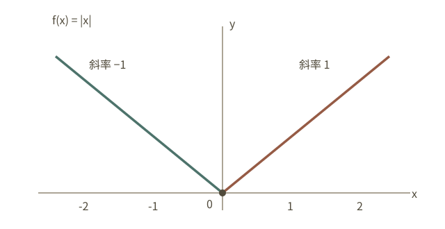
下面这些常用的求导公式，都可以通过导数的定义得到。
下表均在相应函数可导的位置使用；一般实指数幂的公式先按 \displaystyle x>0 理解。
| 函数 | 导数 | 条件 |
|---|---|---|
| \displaystyle C | \displaystyle0 | \displaystyle C 为常数 |
| \displaystyle x^m | \displaystyle mx^{m-1} | 一般实数 \displaystyle m，取 \displaystyle x>0 |
| \displaystyle\sin x | \displaystyle\cos x | \displaystyle x\in\mathbb R |
| \displaystyle\cos x | \displaystyle-\sin x | \displaystyle x\in\mathbb R |
| \displaystyle e^x | \displaystyle e^x | \displaystyle x\in\mathbb R |
| \displaystyle a^x | \displaystyle a^x\ln a | \displaystyle a>0 |
| \displaystyle\ln x | \displaystyle\frac1x | \displaystyle x>0 |
| \displaystyle\log_a x | \displaystyle\frac1{x\ln a} | \displaystyle x>0,\ a>0,\ a\ne1 |
正整数幂的公式适用于所有实数；负整数幂还要排除 \displaystyle x=0。
根据定义，求函数 \displaystyle f(x)=\sin x 的导函数。
用和角公式展开 \displaystyle\sin(x_0+h)，再用重要极限 \displaystyle\lim_{h\to0}\frac{\sin h}{h}=1。
先准备两个极限。由上一回的重要极限，
\lim_{h\to0}\frac{\sin h}{h}=1.
又因为
\frac{\cos h-1}{h} =-\frac{\sin h}{h}\cdot\frac{\sin h}{1+\cos h},
所以 \displaystyle\lim_{h\to0}\frac{\cos h-1}{h}=0。
用和角公式展开，再用极限的四则运算：
\begin{aligned} f'(x_0) &=\lim_{h\to0}\frac{\sin(x_0+h)-\sin x_0}{h}\\ &=\lim_{h\to0}\left[ \sin x_0\frac{\cos h-1}{h} +\cos x_0\frac{\sin h}{h}\right]\\ &=\sin x_0\cdot0+\cos x_0\cdot1\\ &=\cos x_0. \end{aligned}
因此，\displaystyle f'(x)=\cos x。
第六节 · 导数的计算—四则运算
设 \displaystyle f,g 在所考察的点可导，\displaystyle c 为常数，则
\begin{aligned} &[f(x)+g(x)]'=f'(x)+g'(x),\\ &[f(x)-g(x)]'=f'(x)-g'(x),\\ &[cf(x)]'=cf'(x),\\ &[f(x)g(x)]'=f'(x)g(x)+f(x)g'(x),\\ &\left[\frac{f(x)}{g(x)}\right]' =\frac{f'(x)g(x)-f(x)g'(x)}{[g(x)]^2}, \quad g(x)\ne0. \end{aligned}
这些求导法则都可以从导数的定义推导出来。
在分子中加减同一项，得到
\begin{aligned} &\frac{f(x+h)g(x+h)-f(x)g(x)}h\\ &=f(x+h)\frac{g(x+h)-g(x)}h +g(x)\frac{f(x+h)-f(x)}h. \end{aligned}
由可导必连续及极限的四则运算，让 \displaystyle h\to0，便得到 \displaystyle(fg)'=fg'+gf'。
求函数 \displaystyle y = 3x^3 - 4x^2 + 5x - 9 的导数。
对多项式逐项求导，利用幂函数求导公式 \displaystyle (x^n)' = nx^{n-1} 和常数的导数为零。
\begin{align*} y' &= (3x^3)' - (4x^2)' + (5x)' - (9)' \\ &= 3 \cdot 3x^{3-1} - 4 \cdot 2x^{2-1} + 5 \cdot 1x^{1-1} - 0\\ &= 9x^2 - 8x + 5. \end{align*}
求函数 \displaystyle y = 2e^{x}(\sin x + 2\cos x) 的导数。
把 \displaystyle 2e^x 和 \displaystyle (\sin x + 2\cos x) 看作两个因子，应用乘积法则 \displaystyle (uv)' = u'v + uv'。
\begin{align*} y' &= (2e^{x})'(\sin x + 2\cos x) + 2e^{x}(\sin x + 2\cos x)' \\ &= 2e^{x}(\sin x + 2\cos x) + 2e^{x}(\cos x - 2\sin x) \\ &= 2e^{x}\sin x + 4e^{x}\cos x + 2e^{x}\cos x - 4e^{x}\sin x \\ &= 6e^{x}\cos x - 2e^{x}\sin x \\ &= 2e^{x}(3\cos x - \sin x). \end{align*}
求函数 \displaystyle f(x) = x^3 + 3\sin x + \dfrac{5}{2} 的导函数 \displaystyle f'(x) 及 \displaystyle f'\!\left(\dfrac{\pi}{4}\right)。
逐项求导后代入 \displaystyle x = \dfrac{\pi}{4}。
\begin{align*} f'(x) &= (x^3)' + (3\sin x)' + \left( \frac{5}{2} \right)' \\ &= 3x^2 + 3\cos x. \end{align*}
代入 \displaystyle x = \dfrac{\pi}{4}：
f'\!\left( \frac{\pi}{4} \right) = 3\left(\frac{\pi}{4}\right)^2 + 3\cos\frac{\pi}{4} = \frac{3\pi^2}{16} + \frac{3\sqrt{2}}{2}.
求函数 \displaystyle y = \tan x 的导数。
将 \displaystyle \tan x = \dfrac{\sin x}{\cos x} 写成商的形式，再应用商法则。
\begin{align*} y' &= \left( \frac{\sin x}{\cos x} \right)' \\ &= \frac{(\sin x)' \cos x - \sin x (\cos x)'}{\cos^2 x} \\ &= \frac{\cos^2 x + \sin^2 x}{\cos^2 x} = \frac{1}{\cos^2 x}. \end{align*}

第七节 · 导数的计算—链式法则
对于复合函数的求导，有一个非常重要的公式，它把求导过程一层层展开计算，被形象地称为链式法则。
若 \displaystyle u=g(x) 在所考察的点可导，且 \displaystyle y=f(u) 在对应的 \displaystyle u 处可导，则
\boxed{[f(g(x))]'=f'(g(x))g'(x).}
例如 \displaystyle[\sin(x^2)]'=\cos(x^2)\cdot2x。先辨清外层与内层，再分别求导。
设函数 \displaystyle y = \mathrm{e}^{x^2}，求 \displaystyle \dfrac{dy}{dx}。
将 \displaystyle y = \mathrm{e}^{x^2} 看作复合函数，令中间变量 \displaystyle u = x^2，再用链式法则。
令 \displaystyle u = x^2，则 \displaystyle y = \mathrm{e}^u，故
\frac{dy}{dx} = \frac{dy}{du} \cdot \frac{du}{dx} = \mathrm{e}^u \cdot 2x = 2x\mathrm{e}^{x^2}.
设函数 \displaystyle y = \cos\dfrac{x^2-1}{3x}，求 \displaystyle \dfrac{dy}{dx}。
令 \displaystyle u = \dfrac{x^2-1}{3x}，分别求 \displaystyle \dfrac{dy}{du} 和 \displaystyle \dfrac{du}{dx}，再用链式法则合并。
令 \displaystyle u = \dfrac{x^2-1}{3x}，则 \displaystyle y = \cos u。
\frac{dy}{du} = -\sin u,
\frac{du}{dx} = \frac{(2x)(3x) - (x^2-1)(3)}{9x^2} = \frac{6x^2 - 3x^2 + 3}{9x^2} = \frac{x^2+1}{3x^2}.
由链式法则：
\frac{dy}{dx} = -\sin u \cdot \frac{x^2+1}{3x^2} = -\frac{x^2+1}{3x^2}\sin\frac{x^2-1}{3x}.
设 \displaystyle y = \ln\cos x，求 \displaystyle \dfrac{dy}{dx}。
令 \displaystyle u = \cos x，则 \displaystyle y = \ln u，用链式法则。
令 \displaystyle u = \cos x，则 \displaystyle y = \ln u。
\frac{dy}{dx} = \frac{dy}{du} \cdot \frac{du}{dx} = \frac{1}{\cos x} \cdot (-\sin x) = -\tan x.
设 \displaystyle y = \sqrt{1 + 3x^3}，求 \displaystyle \dfrac{dy}{dx}。
将 \displaystyle y = (1+3x^3)^{1/2} 视为复合函数，令 \displaystyle u = 1+3x^3，用链式法则。
令 \displaystyle u = 1+3x^3，则 \displaystyle y = u^{1/2}。
\frac{dy}{du} = \frac{1}{2}u^{-1/2} = \frac{1}{2\sqrt{1+3x^3}}, \quad \frac{du}{dx} = 9x^2.
由链式法则：
\frac{dy}{dx} = \frac{1}{2\sqrt{1+3x^3}} \cdot 9x^2 = \frac{9x^2}{2\sqrt{1+3x^3}}.
设 \displaystyle y = \ln\sin(2x^2)，求 \displaystyle \dfrac{dy}{dx}。
将函数分解为三层复合：\displaystyle y = \ln u，\displaystyle u = \sin v，\displaystyle v = 2x^2，逐层应用链式法则。
令 \displaystyle y = \ln u，\displaystyle u = \sin v，\displaystyle v = 2x^2。
\frac{dy}{dx} = \frac{1}{u} \cdot \cos v \cdot 4x = \frac{\cos(2x^2)}{\sin(2x^2)} \cdot 4x = 4x\cot(2x^2).
设 \displaystyle y = \mathrm{e}^{\cos\sqrt{x}}，求 \displaystyle y'。
将函数分解为三层复合：\displaystyle y = \mathrm{e}^u，\displaystyle u = \cos v，\displaystyle v = \sqrt{x}，逐层求导后相乘。
令 \displaystyle u = \cos\sqrt{x}，\displaystyle v = \sqrt{x}。
\frac{dy}{du} = \mathrm{e}^u = \mathrm{e}^{\cos\sqrt{x}}, \quad \frac{du}{dv} = -\sin v = -\sin\sqrt{x}, \quad \frac{dv}{dx} = \frac{1}{2\sqrt{x}}.
由链式法则：
y' = \mathrm{e}^{\cos\sqrt{x}} \cdot (-\sin\sqrt{x}) \cdot \frac{1}{2\sqrt{x}} = -\frac{\mathrm{e}^{\cos\sqrt{x}}\sin\sqrt{x}}{2\sqrt{x}}.
设 \displaystyle y = \cos 2x \cdot \cos^2 x，求 \displaystyle y'。
用乘积法则求导，对 \displaystyle \cos 2x 和 \displaystyle \cos^2 x 分别求导，最后利用二倍角公式化简。
\begin{aligned} y' &= (\cos 2x)'\cos^2 x + \cos 2x(\cos^2 x)' \\ &= -2\sin 2x\cos^2 x + \cos 2x \cdot (-2\sin x\cos x) \\ &= -2\cos x(\sin 2x\cos x + \cos 2x\sin x) \\ &= -2\cos x\sin 3x. \end{aligned}
（最后一步利用了 \displaystyle \sin(2x + x) = \sin 2x\cos x + \cos 2x\sin x。）
第八节 · 高阶导数
导函数本身也是函数。如果它还可导，求导运算就可以继续下去。
\displaystyle f' 的导数称为二阶导数，记为 \displaystyle f''。继续求导，依次得到 \displaystyle f^{(3)},f^{(4)},\ldots。
若 \displaystyle s(t) 表示位移，用 \displaystyle v(t) 表示速度，\displaystyle a(t) 表示加速度，则
v(t)=s'(t),\qquad a(t)=v'(t)=s''(t).
位移图像的斜率给出速度，速度图像的斜率给出加速度。
下图以 \displaystyle s(t)=\frac12t^2 为例：位移图像越来越陡，速度随时间增大；速度图像是一条斜率为 \displaystyle1 的直线，所以加速度始终为 \displaystyle1。
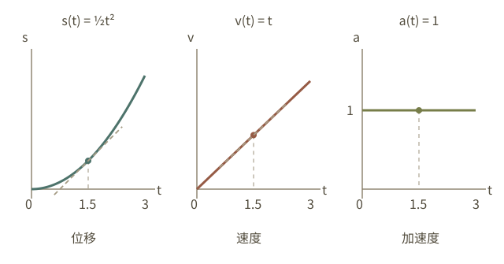
设 \displaystyle y = ax^2 + bx + c，求二阶导数 \displaystyle y''。
先对 \displaystyle y 求一阶导数，再对 \displaystyle y' 再次求导。
一阶导数：
y' = 2ax + b.
二阶导数：
y'' = 2a.
求函数 \displaystyle y=\sin x 的前四阶导数及第 \displaystyle100 阶导数。
依次求导，看看第四阶导数与原函数有什么关系。
依次求导，得到
\begin{aligned} y'&=\cos x,\\ y''&=-\sin x,\\ y^{(3)}&=-\cos x,\\ y^{(4)}&=\sin x. \end{aligned}
四次求导后又回到原函数，之后每四次重复一次。由于 \displaystyle100=4\times25，所以
y^{(100)}=\sin x.
第九节 · 导数与函数的变化
学会求导以后，我们来研究函数的增减变化、极值与最值。
对区间 \displaystyle I 内任意 \displaystyle x_1<x_2：
- 若总有 \displaystyle f(x_1)\le f(x_2)，称 \displaystyle f 在 \displaystyle I 上单调递增。
- 若总有 \displaystyle f(x_1)\ge f(x_2)，称 \displaystyle f 在 \displaystyle I 上单调递减。
设 \displaystyle f 在区间 \displaystyle I 上连续，并在其内部可导。
- 若区间内部处处有 \displaystyle f'(x)\ge0，则 \displaystyle f 在 \displaystyle I 上单调递增。
- 若区间内部处处有 \displaystyle f'(x)\le0，则 \displaystyle f 在 \displaystyle I 上单调递减。
- 若区间内部处处有 \displaystyle f'(x)=0，则 \displaystyle f 在 \displaystyle I 上为常数。
这里的条件针对整个区间，不能只检查一个点。
讨论函数 \displaystyle y = x + \cos x 在 \displaystyle [0, 2\pi] 上的单调性。
求导后判断导数在区间上的符号。
函数在 \displaystyle [0, 2\pi] 上连续，在 \displaystyle (0, 2\pi) 内可导。求导得：
y' = 1 - \sin x \ge 0.
故函数 \displaystyle y = x + \cos x 在 \displaystyle [0, 2\pi] 上单调递增。
![左图 \displaystyle y=x+\cos x 在 \displaystyle [0,2\pi] 单调递增; 右图 \displaystyle y'=1-\sin x \geq 0 处处非负 — 这就是单调的依据](media/img/chpt2_ex012.png)
讨论函数 \displaystyle y = e^x - x + 3 的单调性。
求导后，分析 \displaystyle y' = e^x - 1 在 \displaystyle x < 0 和 \displaystyle x \ge 0 时的正负。
对函数求导得：
y' = e^x - 1.
- 当 \displaystyle x < 0 时，\displaystyle y' < 0，故函数在 \displaystyle (-\infty, 0] 上单调递减；
- 当 \displaystyle x \ge 0 时，\displaystyle y' \ge 0，故函数在 \displaystyle [0, +\infty) 上单调递增。

极值
在区间内部的点 \displaystyle c 附近，若所有函数值都满足 \displaystyle f(x)\le f(c)，就称 \displaystyle f(c) 为一个极大值；若都满足 \displaystyle f(x)\ge f(c)，就称 \displaystyle f(c) 为一个极小值。极大值与极小值统称极值，只与附近的函数值比较。
若 \displaystyle f 在区间内部的点 \displaystyle c 可导，并在该点取到极值，则必有 \displaystyle f'(c)=0。
反过来，\displaystyle f'(c)=0 并不保证有极值。例如 \displaystyle f(x)=x^3 在 \displaystyle0 处导数为零，却一直递增。
判断一个候选点，可以看其两侧的导数符号：由正变负，得到极大值；由负变正，得到极小值。
若 \displaystyle f'(c)=0，且 \displaystyle f 在 \displaystyle c 附近二阶可导，还可以用二阶导数判断：
- \displaystyle f''(c)>0：在 \displaystyle c 处取得极小值。
- \displaystyle f''(c)<0：在 \displaystyle c 处取得极大值。
- \displaystyle f''(c)=0：这个判别法不能直接给出结论，需要继续考察函数的变化。
下图都取 \displaystyle c=0。前两图分别给出极小值与极大值；后两图的二阶导数都为零，但 \displaystyle x^4 有极小值，\displaystyle x^3 没有极值。
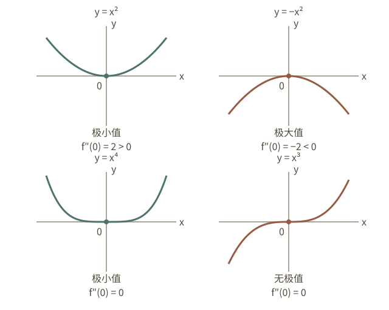
求函数 \displaystyle f(x) = x^4 - 4x^2 的极值。
令一阶导数 \displaystyle f'(x) = 0 求出临界点，再用二阶导数判断各临界点处的极值类型。
令一阶导数等于零：
f'(x) = 4x^3 - 8x = 4x(x^2 - 2) = 0.
临界点为：
x_1 = 0, \quad x_2 = \sqrt{2}, \quad x_3 = -\sqrt{2}.
二阶导数为：
f''(x) = 12x^2 - 8.
计算各临界点处的二阶导数：
- \displaystyle x_1 = 0：\displaystyle f''(0) = -8 < 0，为极大值，\displaystyle f(0) = 0；
- \displaystyle x_2 = \sqrt{2}：\displaystyle f''(\sqrt{2}) = 16 > 0，为极小值，\displaystyle f(\sqrt{2}) = -4；
- \displaystyle x_3 = -\sqrt{2}：\displaystyle f''(-\sqrt{2}) = 16 > 0，为极小值，\displaystyle f(-\sqrt{2}) = -4。

最值
从局部转向整体，最值要与整个研究区间的函数值比较。附近的山峰，未必是整段山路的最高处。前面的最值定理保证了闭区间上连续函数的最值存在，现在可以用导数寻找它们的位置。
若 \displaystyle f 在 \displaystyle[a,b] 上连续，求最值时要比较：
- 区间内部导数为零的点处的函数值；
- 区间内部不可导的点处的函数值；
- 两个端点的函数值。
找出候选位置以后，还要比较函数值，才能确定整个区间的最大值和最小值。
凸函数与凹函数
对于一般函数，极值未必是整个研究区间上的最值。但有两类“形态特殊”的函数：凸函数（convex function）的极小值一定是全局最小值，凹函数（concave function）的极大值一定是全局最大值。 下面从图像认识这两类函数。
若对区间内任意 \displaystyle x_1,x_2 和任意 \displaystyle t\in[0,1]，都有
f(tx_1+(1-t)x_2)\le tf(x_1)+(1-t)f(x_2),
就称 \displaystyle f 为凸函数。
若上面的不等号反向，即
f(tx_1+(1-t)x_2)\ge tf(x_1)+(1-t)f(x_2),
就称 \displaystyle f 为凹函数。
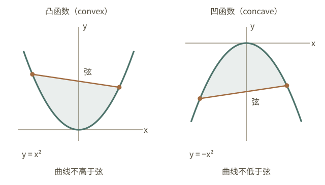
这个公式背后有很强的几何直觉。令 \displaystyle x=tx_1+(1-t)x_2：
- 不等号左边的 \displaystyle f(x)，是曲线在横坐标 \displaystyle x 处的高度。
- 不等号右边的 \displaystyle tf(x_1)+(1-t)f(x_2)，是两点连线在同一横坐标 \displaystyle x 处的高度。
左边小于或等于右边，表示曲线不高于两点连线，这是凸函数的形态；左边大于或等于右边，表示曲线不低于两点连线，这是凹函数的形态。因此，凸函数的曲线位于弦的下方或与它重合；凹函数的曲线位于弦的上方或与它重合。
凸函数的极小值一定是全局最小值；凹函数的极大值一定是全局最大值。
给函数加上负号，图像便上下翻转：\displaystyle f 是凹函数，当且仅当 \displaystyle-f 是凸函数。
设函数 \displaystyle f 在区间 \displaystyle I 上二阶可导。
- 若在整个区间上都有 \displaystyle f''(x)\ge0，则 \displaystyle f 是凸函数。
- 若在整个区间上都有 \displaystyle f''(x)\le0，则 \displaystyle f 是凹函数。
二阶导数反映斜率怎样变化：斜率逐渐增大，曲线呈凸形；斜率逐渐减小，曲线呈凹形。
判断函数 \displaystyle y = x^2 的凹凸性。
计算二阶导数，根据其符号判断凹凸性。
计算二阶导数：\displaystyle y'' = 2 > 0，故 \displaystyle y = x^2 为凸函数。

判断函数 \displaystyle y = \ln x（\displaystyle x > 0）的凹凸性。
计算二阶导数，根据其符号判断凹凸性。
计算二阶导数：\displaystyle y'' = -\dfrac{1}{x^2} < 0，故 \displaystyle y = \ln x 为凹函数。

判断函数 \displaystyle f(x)=\frac1x 在 \displaystyle(0,+\infty) 上的凹凸性。
计算二阶导数，判断它在正半轴上的符号。
f'(x)=-\frac1{x^2},\qquad f''(x)=\frac2{x^3}.
当 \displaystyle x>0 时，\displaystyle f''(x)>0，所以 \displaystyle f(x)=\frac1x 在 \displaystyle(0,+\infty) 上是凸函数。图像中，曲线位于两点连线的下方。
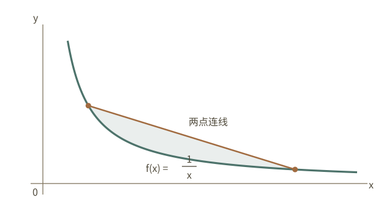
在凸函数的定义中取 \displaystyle t=\frac12，便得到
f\!\left(\frac{a+b}{2}\right)\le\frac{f(a)+f(b)}2.
这条中点关系，把图像的形态与中学里熟悉的不等式联系起来：
平方和不等式。取凸函数 \displaystyle f(x)=x^2，对任意实数 \displaystyle a,b，得到
(a+b)^2\le2(a^2+b^2).
基本不等式。取凸函数 \displaystyle f(x)=-\ln x，对 \displaystyle a,b>0，得到
\sqrt{ab}\le\frac{a+b}{2}.
倒数不等式。取 \displaystyle x>0 上的凸函数 \displaystyle f(x)=\frac1x，对 \displaystyle a,b>0，得到
\frac1a+\frac1b\ge\frac4{a+b}.
这三个不等式都在 \displaystyle a=b 时取等号。过去从代数运算中得到的结论，现在也可以从函数的形态来理解。
第十节 · Boss 战—穿越结界
掌握了导数运算，我们分析函数的本领又上了一个台阶。接下来，迎来本回的大 Boss：镜中人。他是悟空在结界中化出的一道分身，正等候天命人前来过招。
天命人站在结界外的 \displaystyle A 点，与结界幻境中 \displaystyle B 点的悟空遥遥对视。天命人迎面冲上去，想要近身还击，却在出手之前被悟空轻巧地躲开。接连尝试几次，结果都是如此。
天命人停下来思索：问题出在自己赶到得不够快，给了悟空闪避的时间。尤其进入结界后，脚步明显慢了下来。怎样选择路线，才能以最短的时间到达 \displaystyle B 点？
假设结界边界是一条直线，结界外天命人的速度为 \displaystyle v_1，结界内的速度为 \displaystyle v_2，且 \displaystyle v_1>v_2>0。选择不同的位置进入结界，会改变在结界内外行进的路程，从而影响总耗时。关键是找到边界上的点 \displaystyle P，使天命人从 \displaystyle A 到 \displaystyle B 的时间最短。
如下图，天命人沿 \displaystyle A\to P\to B 行进，两个角均相对于结界边界的法线测量。

把结界边界设为横轴，取 \displaystyle A=(0,h_1)、\displaystyle B=(l,-h_2)、\displaystyle P=(x,0)，其中 \displaystyle h_1,h_2,l>0。图中的 \displaystyle O、\displaystyle Q 分别是 \displaystyle A、\displaystyle B 在边界上的垂足，\displaystyle OQ=l。
确定进入点 \displaystyle P 后，两种环境内都沿直线行进。移动 \displaystyle P，两段路程随之改变。由勾股定理，总耗时为
T(x)=\frac{\sqrt{h_1^2+x^2}}{v_1} +\frac{\sqrt{h_2^2+(l-x)^2}}{v_2}.
计算导数
由四则运算和链式法则，
T'(x)=\frac{x}{v_1\sqrt{h_1^2+x^2}} -\frac{l-x}{v_2\sqrt{h_2^2+(l-x)^2}}.
确定最优进入点
再求一次导数，得到
T''(x)=\frac{h_1^2}{v_1(h_1^2+x^2)^{\frac32}} +\frac{h_2^2}{v_2(h_2^2+(l-x)^2)^{\frac32}}>0.
所以 \displaystyle T 是凸函数。令 \displaystyle T'(x_*)=0，得到
\boxed{\frac{x_*}{v_1\sqrt{h_1^2+x_*^2}} =\frac{l-x_*}{v_2\sqrt{h_2^2+(l-x_*)^2}}}.
因为 \displaystyle T''(x_*)>0，\displaystyle x_* 是极小值点。凸函数的极小值就是全局最小值，因此 \displaystyle P_*=(x_*,0) 就是最优进入点，最快路线为 \displaystyle A\to P_*\to B。
读出角度关系
根据图形，最快路线上的两个角满足
\sin\theta_1=\frac{x_*}{\sqrt{h_1^2+x_*^2}}, \qquad \sin\theta_2=\frac{l-x_*}{\sqrt{h_2^2+(l-x_*)^2}}.
将这两个比值代入上面的方程，就得到下面的关系。
最快路线满足的关系
\boxed{\frac{\sin\theta_1}{v_1}=\frac{\sin\theta_2}{v_2}}
正是光的折射定律（斯涅尔定律）。光从一种介质进入另一种介质时，两个角均相对于界面的法线测量。若 \displaystyle v_1>v_2，则 \displaystyle\theta_2<\theta_1，光的传播方向向法线偏折。
在这里两种均匀介质、平直界面的情形中，光的传播路线使总传播时间最短。这是费马原理在这里的体现：最快的路线，未必是路程最短的直线。
第十一节 · 微分与线性近似
在定义导数时，我们用到了两个量的比值 \displaystyle\frac{\Delta y}{\Delta x}：\displaystyle\Delta x 是自变量的改变量，\displaystyle\Delta y=f(x+\Delta x)-f(x) 是相应的函数值改变量。让 \displaystyle\Delta x\to0，这个比值的极限就是导数。
本节，我们把这两个变化量分别拿出来考察：当一个量发生微小变化时，与它相关的另一个量怎样随之变化？
微小变化的联动
考虑一个机械臂：关节的齿轮转过一个很小的角度，末端手指的位置会改变多少？反过来，如果希望手指向上移动一点，关节应当转动多少？我们关心的是转角与位置这两个量的微小变化之间的关系。
把机械臂简化为一根长为 \displaystyle r 的杆，转角为 \displaystyle\theta，末端的高度为 \displaystyle y=r\sin\theta。转角改变 \displaystyle\Delta\theta，高度也随之改变 \displaystyle\Delta y。
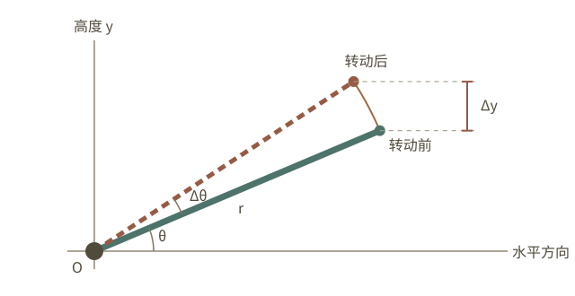
研究这样的微小变化，是微分的出发点。我们用 \displaystyle d\theta、\displaystyle dy 表示角度与高度的微分。
直观上看，\displaystyle d\theta、\displaystyle dy 蕴含着 \displaystyle\Delta\theta 和 \displaystyle\Delta y 趋于 \displaystyle0 的极限过程。在这个过程中，它们都趋于 \displaystyle0，但二者之间的关系并不平凡：它反映了函数本身的性质，描述了两个量在局部怎样联动。
莱布尼茨是微积分的创立者之一。他为微分创立了符号 \displaystyle d，例如 \displaystyle dx、\displaystyle dy，并用 \displaystyle\frac{dy}{dx} 表示导数。这套记号把两个量的微小变化与它们的变化率联系起来，沿用至今。
微分与导数
怎样建立 \displaystyle d\theta 与 \displaystyle dy 之间的关系？先固定机械臂当前的转角 \displaystyle\theta_0，从最简单的线性关系出发：
dy=C\,d\theta.
这里的 \displaystyle C 是待定的比例系数，也是这条直线的斜率。它表示：在当前姿态下，角度每改变一点，高度会相应改变多少。
这相当于希望用 \displaystyle\Delta y\approx C\,\Delta\theta 近似实际的高度变化；随着转角变化缩小，所忽略的误差相对于 \displaystyle\Delta\theta 也应越来越小。
要确定 \displaystyle C，就要看实际变化之比 \displaystyle\frac{\Delta y}{\Delta\theta} 在转角变化越来越小时趋于什么。若把高度记为 \displaystyle y=f(\theta)，根据导数的定义，
C=\lim_{\Delta\theta\to0}\frac{\Delta y}{\Delta\theta}=f'(\theta_0).
描述两个微小变化局部联动的这条直线，其斜率恰好就是函数在当前位置的导数。 这便把微分与我们已经学过的导数联系起来。
线性近似要求：所忽略的误差，相对于输入的改变量越来越小。因此，希望选取 \displaystyle C，使
\lim_{\Delta\theta\to0}\frac{\Delta y-C\Delta\theta}{\Delta\theta}=0.
由导数的定义，左边等于
\lim_{\Delta\theta\to0}\left(\frac{\Delta y}{\Delta\theta}-C\right)=f'(\theta_0)-C.
所以必须有 \displaystyle C=f'(\theta_0)；取这个值，也确实满足上面的要求。这说明导数正是所需的线性近似的斜率。
把这个思路写成一般形式，就得到下面的微分公式。
若 \displaystyle y=f(x) 在 \displaystyle x_0 处可导，取自变量的微分 \displaystyle dx=\Delta x，定义函数的微分为
\boxed{dy=f'(x_0)\,dx.}
在固定位置 \displaystyle x_0，导数 \displaystyle f'(x_0) 就是联系 \displaystyle dx 与 \displaystyle dy 的比例系数。导数也记作 \displaystyle\frac{dy}{dx}。
回到机械臂：由 \displaystyle y=r\sin\theta，在当前转角 \displaystyle\theta_0 处的导数为 \displaystyle r\cos\theta_0，因而
dy=r\cos\theta_0\,d\theta.
同样大小的微小转动，在不同姿态下引起的高度变化可以不同，这就体现在系数 \displaystyle r\cos\theta_0 中。给定微小转角，可以用这个公式估计高度的变化；当 \displaystyle\cos\theta_0\ne0 时，也可以反过来写成 \displaystyle d\theta=\frac{dy}{r\cos\theta_0}，估计实现微小升降所需的转角。
同样，若位移与时间满足 \displaystyle s=s(t)，则 \displaystyle ds=v(t)\,dt：瞬时速度把时间的微小变化与位移的微小变化联系起来。
化曲为直
微分与实际的改变量有什么关系？取 \displaystyle dx=\Delta x，当 \displaystyle\Delta x 很小时，
\Delta y\approx dy=f'(x_0)\,\Delta x.
也就是说，用当前位置的变化率乘以自变量的改变量，就能估计函数值的改变量。加上原来的函数值，便得到
f(x_0+\Delta x)\approx f(x_0)+f'(x_0)\,\Delta x.

微分给出了实际改变量的线性近似。 在图上，\displaystyle\Delta y 是曲线上的高度变化，\displaystyle dy 是切线上的高度变化。对于直线，二者完全相同；对于曲线，二者一般不同，但在足够小的范围内，切线可以很好地近似曲线。
利用线性近似，估算 \displaystyle\sqrt{4.04}。
取 \displaystyle f(x)=\sqrt{x}，在容易计算的 \displaystyle x_0=4 附近作近似。这里 \displaystyle h=0.04。
因为 \displaystyle f(4)=2，且 \displaystyle f'(x)=\frac{1}{2\sqrt{x}}，所以 \displaystyle f'(4)=\frac14。
当自变量从 \displaystyle4 增加到 \displaystyle4.04 时，取 \displaystyle dx=h=0.04，微分为
dy=f'(4)\,dx=\frac14\times0.04=0.01.
因此
\sqrt{4.04}\approx f(4)+dy=2+0.01=2.01.
这里 \displaystyle0.01 是函数增量的近似值，\displaystyle2.01 是函数值的近似值。
对于匀速运动 \displaystyle s = s_0 + vt 和初速度为零的匀加速运动 \displaystyle s = s_0 + \frac{1}{2}at^2，利用微分公式分别写出位移微分 \displaystyle ds 与时间微分 \displaystyle dt 之间的关系，并说明线性函数情形下微分给出精确值的原因。
对函数 \displaystyle s = f(t) 应用微分公式 \displaystyle ds = f'(t)\,dt，分别对两个运动函数求导。
匀速运动：\displaystyle s = s_0 + vt，求导得 \displaystyle s'(t) = v，故
ds = v\,dt.
对于线性函数，\displaystyle \Delta s = v\Delta t 精确成立（无误差），因为线性函数的差分与微分完全相等：\displaystyle \Delta s - ds = 0。
匀加速运动：\displaystyle s = s_0 + \frac{1}{2}at^2，求导得 \displaystyle s'(t) = at，故
ds = at\,dt.
此时真实增量 \displaystyle \Delta s = at\Delta t + \frac{1}{2}a(\Delta t)^2，而微分预测值为 \displaystyle at\Delta t，误差为 \displaystyle \frac{1}{2}a(\Delta t)^2。当 \displaystyle \Delta t \to 0 时，误差趋于零，体现了”化曲为直”的思想。
微分中的链式法则
若 \displaystyle y=f(u)、\displaystyle u=g(x) 两层函数都可导，则两个微分关系为 \displaystyle dy=f'(u)\,du、\displaystyle du=g'(x)\,dx。把后者代入前者，得到
dy=f'(u)g'(x)\,dx.
这就把 \displaystyle x 的微小变化如何传给 \displaystyle u、再传给 \displaystyle y 的过程连了起来。相应的导数关系就是熟悉的链式法则：
\frac{dy}{dx}=\frac{dy}{du}\frac{du}{dx}.
第十二节 · 沿坡而下—梯度下降法
接下来介绍的梯度下降法，在科学研究、工程技术与人工智能（AI）中都有广泛应用，是训练许多 AI 模型的基础算法。它也是化曲为直思想的应用：借助函数在当前位置的线性近似，判断怎样调整自变量才能减小函数值，再一步步向更低处走。
从数据中寻找规律
先看一个简化的数据拟合问题。下面的数据由正比例关系加入随机误差生成。假如我们只拿到这些数据，希望用直线 \displaystyle y=kx 描述它们，应该怎样确定斜率 \displaystyle k？
这里的拟合直线，与前面“化曲为直”中的直线含义不同。 拟合直线用于概括一组数据的整体趋势；“化曲为直”则是在某一点附近，用切线对函数作局部近似。梯度下降法中的“化曲为直”，体现在后面对损失函数的局部近似中。

给定 \displaystyle k，直线在 \displaystyle x_i 处预测的值是 \displaystyle kx_i，它与观测值 \displaystyle y_i 的误差为 \displaystyle y_i-kx_i。把各个误差平方后取平均，得到一个关于 \displaystyle k 的函数：
L(k)=\frac{(y_1-kx_1)^2+(y_2-kx_2)^2+\cdots+(y_N-kx_N)^2}{N}.
它叫作损失函数，这里采用的是均方误差。\displaystyle L(k) 越小，说明直线与数据拟合得越好。于是，寻找合适的直线，就转化为寻找损失函数的最小值。
这个例子中的 \displaystyle L(k) 是开口向上的二次函数，可以直接求导、解方程找到最小值点。但更复杂的模型，未必能直接解出最优参数。梯度下降法提供了另一种办法：从一个初始值出发，利用导数反复调整参数，逐步减小损失。
让导数指路
这就像调一台老式收音机：把参数 \displaystyle k 想象成旋钮的位置，把损失 \displaystyle L(k) 想象成杂音的强弱。轻轻转一下，听听杂音的变化，再决定往哪边转。

- 若 \displaystyle L'(k)>0，增大 \displaystyle k 会使损失在附近增大，应当向减小 \displaystyle k 的方向调整。
- 若 \displaystyle L'(k)<0，增大 \displaystyle k 会使损失在附近减小，应当向增大 \displaystyle k 的方向调整。
两种情况可以合写为同一个更新公式。
选择初始参数 \displaystyle k_0 和正数 \displaystyle\eta，反复计算
\boxed{k_{j+1}=k_j-\eta L'(k_j).}
\displaystyle\eta 称为学习率，控制每次调整的步幅。每一步都重新计算当前位置的导数，再沿着它的反方向移动。在本节的一个变量情形中，梯度就是导数。
实际计算时，可以设置容许误差和最多迭代次数；当导数的绝对值足够小，或达到迭代次数上限时，停止调整。
化曲为直的应用
在当前位置 \displaystyle k_j，微分给出损失变化的线性近似 \displaystyle\Delta L\approx L'(k_j)\,\Delta k。按照更新公式，取 \displaystyle\Delta k=-\eta L'(k_j)，得到
\Delta L\approx-\eta\bigl[L'(k_j)\bigr]^2.
当导数不为零时，右边为负，说明沿这个方向作足够小的移动，可以使损失减小。每一步用一条切线判断方向，走到新位置后再重新判断，这就是梯度下降法中的化曲为直。
步幅也要合适
切线只反映当前位置附近的变化，学习率会影响这份局部判断的效果：
- 学习率太小，每次只移动一点，可能需要很多步才能靠近谷底。
- 学习率合适，可以逐步减小损失。
- 学习率太大，可能越过谷底，来回跳动，甚至越走越远。

取 \displaystyle f(x)=(x-2)^2，导数为 \displaystyle f'(x)=2(x-2)，更新公式就是 \displaystyle x_{j+1}=x_j-2\eta(x_j-2)。从 \displaystyle x_0=6 出发，比较不同学习率的效果：
| 学习率 \displaystyle\eta | 位置的变化 | 现象 |
|---|---|---|
| \displaystyle0.05 | \displaystyle6\to5.6\to5.24\to4.916\to\cdots | 步幅较小，慢慢靠近谷底 |
| \displaystyle0.25 | \displaystyle6\to4\to3\to2.5\to\cdots | 逐步靠近谷底 |
| \displaystyle1 | \displaystyle6\to-2\to6\to-2\to\cdots | 在谷底两侧来回跳动 |
| \displaystyle1.2 | \displaystyle6\to-3.6\to9.84\to-8.976\to\cdots | 越跳越远 |
对这个函数，取 \displaystyle0<\eta<1，迭代会趋近最小值点 \displaystyle2。这个学习率范围由具体函数决定，不能直接照搬到其他问题中。
回到数据拟合
用梯度下降法不断调整斜率，图中这组数据得到的拟合直线约为 \displaystyle y=2.69x。它与生成数据时使用的 \displaystyle y=2.5x 略有差别，因为观测数据中含有随机误差；我们寻找的是对眼前这组数据拟合得最好的参数。

训练许多 AI 模型时，也会先定义损失函数，再根据导数或梯度调整参数。这里的一条直线、一个斜率，是理解这一过程的简单起点。对于有多个山谷的损失函数，找到一个极小值点，未必就找到了全局最小值点；导数接近零，也需要结合函数的形态判断。
第十三节 · 回望来路
这一回，我们从连续函数出发，把函数图像看作起伏的山路。为了刻画函数的变化，我们从差商的极限中引出了导数，再用它研究函数的增减变化、极值与最值。
导数的定义说明它是什么，基本公式、四则运算和链式法则帮助我们计算它；导数的符号帮助我们判断增减，增减的转折帮助我们寻找极值，比较候选位置的函数值才能确定最值。
穿越结界这一战，把这些本领连在了一起：实际问题 → 函数模型 → 求导 → 判断最值 → 解释结论。 微分则把变化率变成局部的线性近似，让我们用一条直线把握曲线附近的变化。梯度下降法进一步利用这个局部判断，让导数指示逐步调整的方向。